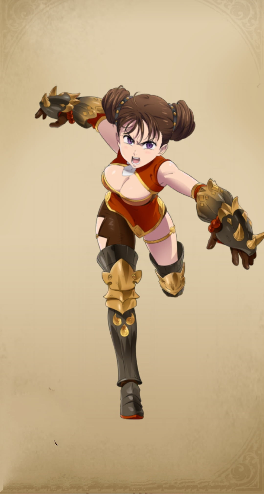

Diane
Diane is a beloved character from "The Seven Deadly Sins" series. Diane, also known as the Serpent's Sin of Envy, is a member of the Seven Deadly Sins. She is a Giant and possesses immense physical strength. Diane's special ability is Creation, which allows her to manipulate the earth. Despite her formidable powers, Diane is kind-hearted and deeply values her friends. She has strong feelings for Meliodas and later for King, the Fairy King, who reciprocates her feelings. Diane is also known for her love of dancing, which is a significant part of her character and abilities.